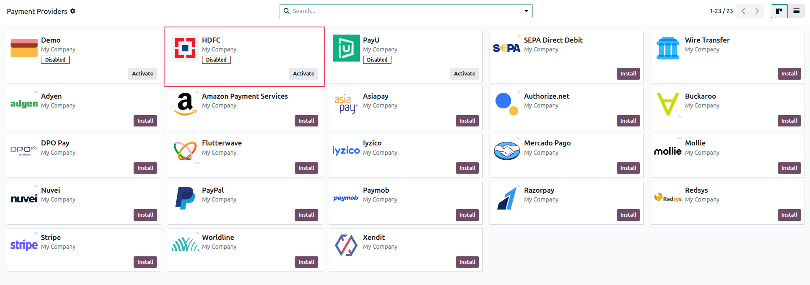
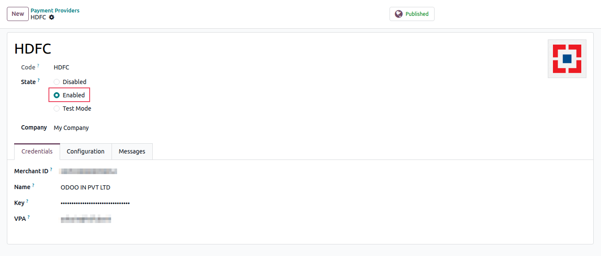
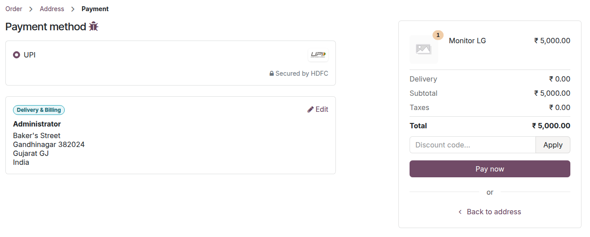

HDFC Payment Gateway Integration
Configuration on HDFC
How to Access Credentials?
Pre-requisites and Webhook Configuration
- The merchant must submit a properly filled Merchant Integration Questionnaire (MIQ) to HDFC for onboarding in both UAT and Production environments.
-
Upon successful review, the HDFC Merchant Integration Team will onboard the merchant and share the following credentials:
- UPI Merchant ID
- UPI Merchant Name
- VPA (Virtual Payment Address)
- Merchant Encryption Key (for encryption and decryption)
-
Merchant must share a valid HTTPS callback URL with the HDFC team for whitelisting in both UAT and Production environments.
Callback URL Format: Odoo database URL followed by
/payment/HDFC/webhook in the Webhook URL field.
For example: https://example.odoo.com/payment/HDFC/webhook
- At last, Merchant integration Team will share the encryption/decryption toolkit (Java, dotNet, PHP) for reference and provide UAT application (apk) for testing.
For your onboarding, we invite you to book an appointment using the link provided. During this session, our team will guide you through the onboarding steps and assist with any setup or clarification you may need:
https://www.odoo.com/book/india-payment-provider
Configuration on Odoo
- Install the module from the Apps menu.
-
Now, navigate to the Payment providers by going to:
- Accounting ‣ Configuration ‣ Payment Providers
- Website ‣ Configuration ‣ Payment Providers
- Sales ‣ Configuration ‣ Payment Providers

-
Select the provider and configure the Credentials tab.

- Set the State to Enabled.
After completing the configuration, the HDFC UPI Payment Method will appear on your website's checkout page, based on the settings configured in the Payment Provider.

Support
For any queries or support needs, kindly schedule an appointment via the link below. This will allow our team to address your concerns directly and provide the necessary guidance:
https://www.odoo.com/book/india-payment-provider